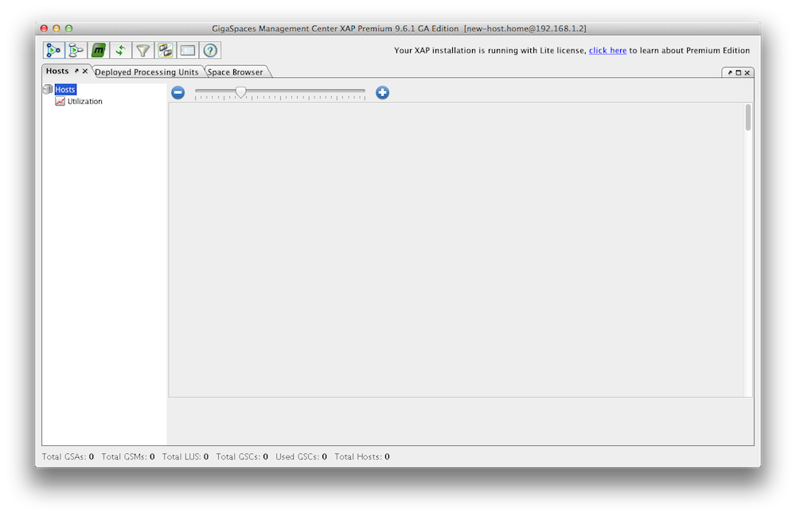
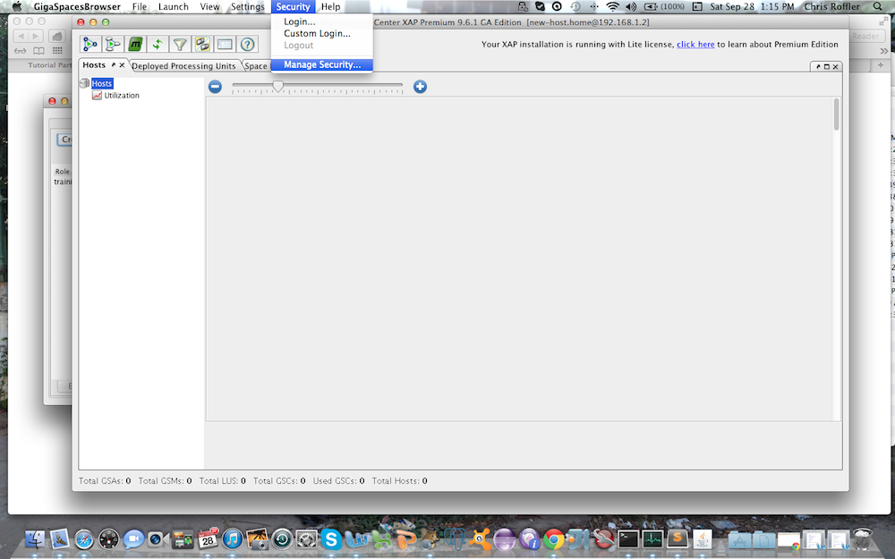
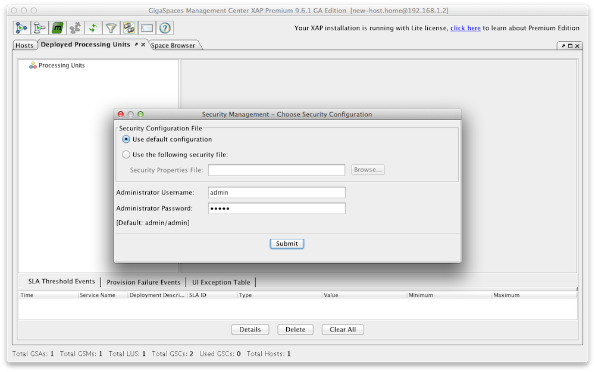
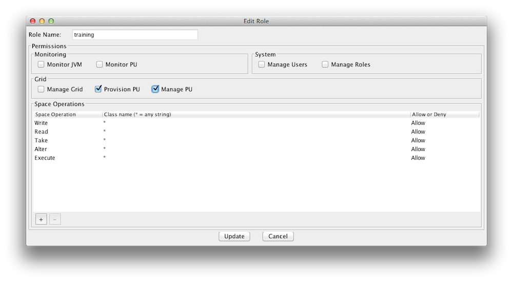
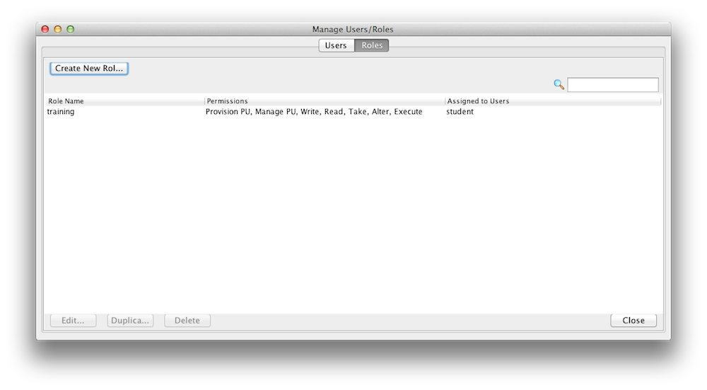
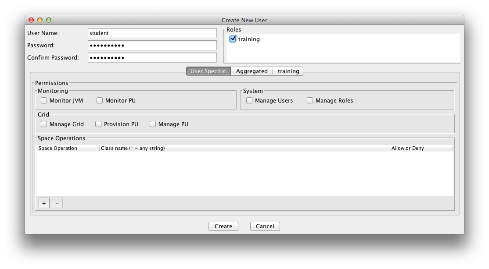
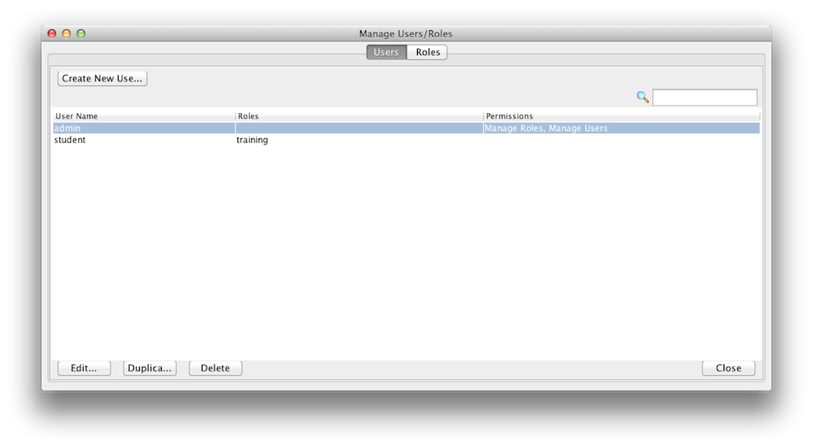

This is an introduction to
Some security features are part of the open source edition, while others are only available with the commercial (licensed) editions.
This security feature is only available with the commercial (licensed) editions.
For information about Authentication, Authorization and Security Roles (Privileges) refer to the Security Overview page.
Security is made up of Authentication and Authorization.
Authentication is the process of establishing and confirming the authenticity of a principal. A principal in GigaSpaces terms, means a user (human or software) performing an action in your application. A principal in
Authorization refers to the process of deciding whether a principal is allowed to perform a certain action. The authorization decision layer is totally independent from the authentication layer. The authorization decision manager is internal to
The System Authority consists of two privileges:
| Privilege | Description |
|---|---|
| Manage Roles | Define roles (a set of privileges assigned to a logical role name) |
| Manage Users | Assign users to pre-defined roles, or assign user-specific privileges |
| Manage Identity Providers | Allows users to create Identity Provider (IdP) settings and to view the current as well as historical IdP settings |
The Grid Authority consists of privileges for managing the Grid and its Services (GSMs, GSCs, Processing Units).
| Privilege | Description |
|---|---|
| Provision PU | Deploy, Un-deploy of processing units |
| Manage PU | Scale up/down, Relocate, Restart PU instance, Destroy PU instance |
| Manage Grid | Start, Terminate, Restart of GSC/GSM/LUS via GSA |
The Space Authority consists of privileges for operations on space data.
| Privilege | Description |
|---|---|
| Write | Write and Update operations |
| Create | Write only (no Update) operations |
| Read | Read, Count and Notify operations |
| Take | Take and Clear operations |
| Alter | Register type descriptor, Clean and Drop-Class operations |
| Execute | Execute tasks |
The Monitor Authority consists of privileges for monitoring the Grid and its Processing Units. Note that the monitoring is secured only by the "tooling' (CLI/UI).
| Privilege | Description |
|---|---|
| Monitor JVM | Monitoring of JVM statistics |
| Monitor PU | Monitoring of Processing Units (classes, connections, statistics, etc.) |
For more information about role-based security, see the Authorities and Privileges page in the Security section of the Administration guide.
This security feature is only available with the commercial (licensed) editions.
FSM based security, is NOT the default security in Service Grid orchestration. The default is spring based security.
You can create new roles and users with a configuration file or with the Admin UI. Here is an example how you use the Admin UI to create/update roles. Lets create a role called "training" that can access and interact with our xapTutorialSpace, but does not have monitoring authority. Start the Admin UI:
GS_HOME\bin\gs-ui.sh
The default username and password for the security are admin/admin.
|
Start GigaSpaces Management Center  |
Select Security options  |
Log in  |
Create a Role  |
Display Roles  |
You may have noticed that you can assign fine grained access control for space operations (read/write/etc) per space class(slide 4).
For more information, see the GigaSpaces Management Center page in the Administration guide.
This security feature is only available with the commercial (licensed) editions.
File based security, is NOT the default security in Service Grid orchestration. The default is spring based security.
A user is assigned roles. You can create new roles and users with a configuration file or with the Admin UI. Here is an example how you use the Admin UI to create/update users. Lets create a user called student and assign the role training we have just created in the step above. A user can have multiple roles.
|
Log in
|
Create User  |
Display Users  |
You can create Users and Roles via the API. Here is an example:
public void createUser() {
Properties securityProperties = new Properties();
SecurityManager securityManager = SecurityFactory
.createSecurityManager(securityProperties);
directoryManager = securityManager.createDirectoryManager(new User(
"admin", "admin"));
// Create a new Role
this.createRole();
// Create the User
User user = new User("student", "student123", new RoleAuthority("training"));
// Register the new User
UserManager userManager = directoryManager.getUserManager();
userManager.createUser(user);
}
private Role createRole() {
RoleManager roleManager = directoryManager.getRoleManager();
Role role = new Role("training",
new SpaceAuthority(SpacePrivilege.READ),
new SpaceAuthority(SpacePrivilege.WRITE),
new SpaceAuthority(SpacePrivilege.TAKE));
roleManager.createRole(role);
return role;
}
For more information, see the GigaSpaces Management Center page in the Administration guide.
This security feature is only available with the commercial (licensed) editions.
A secured embedded Space protects access (to data) which is granted only to users with sufficient privileges. Here is an example how to create a secure space with no internal services:.
EmbeddedSpaceConfigurer configurer = new EmbeddedSpaceConfigurer("xapTutorialSpace").secured(true);
GigaSpace gigaSpace = new GigaSpaceConfigurer(configurer).gigaSpace();
<os-core:embedded-space id="space" space-name="xapTutorialSpace">
<os-core:security secured="true" />
</os-core:space>
When a remote Space proxy connects to a secured Space, it must provide security credentials (username and password).
public void setupSpace()
{
SpaceProxyConfigurer configurer = new SpaceProxyConfigurer("xapTutorialSpace").credentials("student", "password");
GigaSpace gigaSpace = new GigaSpaceConfigurer(configurer).gigaSpace();
}
<os-core:space-proxy id="space" space-name="xapTutorialSpace">
<os-core:security username="student" password="student123" />
</os-core:space-proxy>
For more information, see the Securing the Data Layer page in the Security section of the Administration guide.
Grid Security is enabled in
-Dcom.gs.security.enabled=true
This property affects the GSA, GSM, GSC and standalone PU instances with a space.
For more information, see the Securing the Grid Services page in the Security section of the Administration guide.
The transport layer can be secured using an SSL communication filter.
For more information, see the Securing the Transport Layer page in the Security section of the Administration guide.